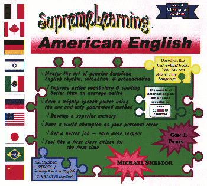
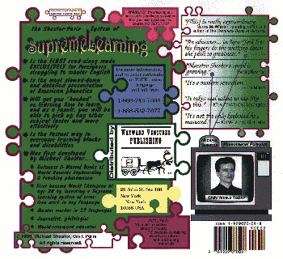

|
Aprenda y conozca a fondo
el idioma inglés más rápido.
Aprenda a estudiar cualquier
materia diez veces más rápido con ayuda de técnicas intensivas y los cursos
acelerados de SupremeLearning™
¿Le cuesta mejorar su
inglés?
| Michael Shestov: |
"Hay
muchas escuelas, cursos, libros y publicidad, pero el inglés no mejora. Ni
siquiera los profesores (nacidos en Estados Unidos o en Inglaterra "portavoces
del idioma" [?!]), ni sus alumnos más "viejos" (nacidos en un país anglosajón)
y "nuevos" (inmigrantes) americanos...
¿Quién pondrá la pronunciación a los maestros de los restantes países anglosajones,
autores extranjeros de metodologías, manuales, cursos y "manuales autodidácticos",
así como ¿también quién les enseñará a ellos mismos a hablar con soltura y escribir
en un inglés americano o británico correcto, estándar y no "defectuoso"?"
[Lea
más] |
|
APRENDA
A COMO ENSENAR
|
INFORMACION
DE LOS CURSOS |
SUBSECCIONES
DE LA PAGINA
Como adquirir los cursos
Consejos de como elegir y emplear los materiales SL
Información general de los productos
Cursos directos y seminarios para estudiantes y profesores de idiomas
Muestras
de las cubiertas internacionales
Derechos de autor
Cooperación oficial y posibilidades para organizar proyectos conjuntos
Traduzca este sitio usted mismo
COMO ADQUIRIR LOS CURSOS
Cuando usted
teclea abajo, pasará a la tienda en línea de SupremeLearning, donde podrá hacer
el pedido de los libros SL, audio-libros, video-libros y programas de computadora
para la enseñanza.
"Ir"
a la tienda de SupremeLearning
Los productos
de SupremeLearning son publicados por la editorial
"Wayward Ventures Publishing".
Contacte con nosotros por correo:
Wayward
Ventures Publishing
79 Pine Street #188
New York, NY 10005
USA
Si pulsa aquí puede enviarnos una consulta por escrito.
Contacte con nosotros
vía telefónica: (52) 55-5498-8143, (52) 55-5570-0618 (Sr.
Miguel Arriaga Soria, Mexico), (1) 917-208-7434,
(1) 917-208-9964 (EE.UU.)
Contacte
con nosotros vía telefónica (gratis en EE.UU.): (1)
888-259-7401, (1) 800-557-7763, (1) 877-466-7925,
(1) 800-880-2287
Contacte con nosotros vía
fax: 1-253-981-1477 (EE.UU.)
Contacte
con nosotros vía e-mail: supremelearning@yahoo.com
Si lo desea puede contactarse
directamente con nuestro Representante Oficial para el Projecto SupremeLearning
para Hispanohablantes Sr. Francisco Del Ducca. E-mail: shestov.com@gmail.com
CONSEJOS
DE COMO ELEGIR Y EMPLEAR LOS MATERIALES SL
LIBRO: El libro
de estudio SL contiene una descripción escrita de los principios básicos del
sistema SupremeLearning y de todos los textos de los ejercicios que se emplean
en el curso universal (12 audio-cintas, 1 video) y útiles para cualquiera, independientemente
de su nivel de dominio del inglés. Éste libro puede ser suficiente para quien
está acostumbrado a asimilar lo nuevo mediante la lectura de libros (utilizando
sus particularidades intelectuales individuales).
DISCO: El programa de computadora
(para Windows) para el ordenador personal es para quienes están acostumbrados a reforzar su proceso para memorizar cualesquiera reglas y principios por medio
de la lectura, la escritura, y/o la redacción de apuntes de los materiales de estudio. También incluye todos los textos de los ejercicios que se usan en el
curso universal.
AUDIO-CINTAS O DISCOS
COMPACTOS : Están destinadas para quienes comprenden e interpretan mejor
la información escuchando, y que desean acompañar la lectura y la escritura
(empleando los principios de SupremeLearning) con sólo escuchar los ejercicios
o la lectura sincronizada con las voces de los locutores.
VIDEOS: Están destinados para
aquellos estudiantes que comprenden mejor el material de estudio visualmente.
COMBINACION DE TODO LO ENUMERADO:
Esto suministra la enseñanza sistematizada más completa de las ya existentes,
ya que emplea todo lo que es bien conocido y los nuevos procedimientos para
asimilar conocimientos.
La combinación del libro
de estudio SL y las audio-materiales se considera como el principal instrumento
de trabajo para mejorar sus capacidades como: efectuar una conversación rápida
de calidad, la lectura y comprensión auditiva y de textos escritos durante los
estudios con ayuda del sistema SupremeLearning English. Usted debe utilizar
los videos solamente por algunas horas, a fin de crear o reorganizar su hábito
de articular incorrectamente los sonidos extranjeros; los videos le ayudarán,
en cierto grado, a hacer más fácil y acelerar el proceso de aprendizaje, en
comparación con aquel tipo de enseñanza, en el cual usted emplearía solamente
el libro de estudio y las audio-cintas de SupremeLearning.
Le recomendamos a usted que utilice el disco del programa de computadora al finalizar el ciclo
de enseñanza con SupremeLearning, cuando se hayan mejorado sus capacidades generales
y hábitos de efectuar una conversación y la lectura. El programa de computadora
crea o perfecciona sus hábitos de caligrafía (ortografía y escritura) y el estilo
de la lengua escrita.
INFORMACION GENERAL DE LOS PRODUCTOS
Todos los videos
y audio-cintas contienen ejercicios "fácil de seguir" y fácil de realizar.
Todas los videos son de formato VHS
y cada uno contiene 2 horas de lecciones de estudio con múltiples locutores.
A solicitud del cliente le enviamos videos en otros formatos.
Todas las cintas de audio son de
formato estándar internacional y cada una contiene 90 minutos de lecciones grabadas.
Todos los programas de computadora
se basan en Microsoft Windows y son muy fáciles de manejar y usar.
El libro de estudio de Inglés Americano
SupremeLearning tiene 118 páginas, las cuales contienen instrucciones "paso
a paso" y textos "leemos juntos".
Todas las ventas
son definitivas. Las cajas abiertas con cintas y programas de computadora pueden
ser cambiados solamente por copias similares que tenga el cliente/estudiante.
CURSOS
DIRECTOS Y SEMINARIOS PARA ESTUDIANTES Y PROFESORES DE IDIOMAS
Si usted vive o planea
visitar las ciudades de Nueva York o San Francisco, ¿por qué hemos de hacerle
una invitación para visitar nuestros centros de consultan, localizados en los
centros de estas urbes? Interésese en nuestros cursos "vivos" directos de SupremeLearning.
"Americanize su inglés" y conozca los cursos "Learn How To Learn" [Aprenda a
cómo aprender] conducidos para los estudiantes. Los precios son razonables:
5-10 dólares por hora (para un mínimo de 5 horas) más su libro de estudio SupremeLearning
que también está incluido en el precio. Además, si usted nos recuerda habernos
encontrado en Internet, recibirá un descuento de 10% sobre el costo de cualquier
producto. La enseñanza es llevada a cabo por profesores autorizados del Instituto
Internacional de SupremeLearning y, periódicamente por Michael Shestov en persona.
El cupo es limitado.
Si considera que usted podría ser
un buen candidato como maestro de SL, interésese, tenemos una forma para obtener
licencia de profesor autorizado, no importa donde viva en EE.UU., España, México
o Argentina. La instrucción de profesor en el tema "Cómo aprender a enseñar
cualquier idioma", utilizando el sistema de SupremeLearning ocupa por lo general
de 1 a 4 semanas. El pago para obtener la licencia que da derecho a enseñar
según el sistema de SupremeLearning es variable para cada caso concreto.
El único requisito previo
obligatorio para asistir a los seminarios de capacitación para profesores autorizados
es poder comunicarse por lo menos en inglés simple (más de 600 palabras). Cualquier
curso (directo o a distancia) de Inglés Americano SupremeLearning permitirá
al candidato a profesor pasar las pruebas básicas.
MUESTRAS
DE LAS CUBIERTAS INTERNACIONALES


DERECHOS
DE AUTOR
Los libros, las cintas de audio, los videos y los
programas de computadora de SupremeLearning están protegidos por el "copyright"
a favor de Wayward Ventures Publishing y Michael Shestov.
Las demostraciones
publicas y las reproducciones de los materiales de SupremeLearning están prohibidas
estrictamente a menos que exista convenio con la editorial Wayward Ventures Publishing
y Michael Shestov.
COOPERACION
OFICIAL Y POSIBILIDADES
PARA ORGANIZAR PROJECTOS CONJUNTOS
Envie sus propuestas
de negocios a info@supremelearning.com
u info@learnhowtolearn.com por ejemplo:
-
Las propuestas, referentes a nuevos
idiomas, en los cuales usted quisiera empezar a hacer la traducción de los
libros SL, descripción de los cursos y de otros materiales educativos, son
en condiciones de sociedad
-
Los pedidos de las grabaciones
de video o audio, elaboradas por Shestov, los libros u otros materiales de
estudio de cualquier materia, hechos conforme a los principios de SupremeLearning
(es decir, a velocidad reducida y más clara), permiten hacer que su contenido
sea comprensible en extremo para los estudiantes
-
Ideas de cualquier disciplina educativa,
basadas en los hábitos motores e intelectuales humanos, posiblemente, en aquellos
campos del conocimiento, en el cual usted ya es experimentado y para cuyo
estudio y perfeccionamiento usted quisiera emplear las tecnología de la enseñanza
de SupremeLearning
TRANSLATE
THIS SITE YOURSELF
You can translate this page into Italian, German, Portuguese,
French (use our own site for Russian or Chinese) and, if
you have the proper screen fonts, other languages (Japanese, Korean, etc.):
|